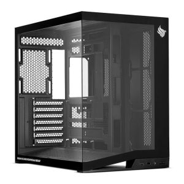

Conheça o PC Gamer Fuzhu VIII, equipado com um processador Intel i7-12700F e 32GB de memória RAM. Este computador gamer entrega desempenho excepcional para jogos avançados e tarefas exigentes. Além disso, sua alta capacidade de memória RAM garante uma multitarefa suave e eficiente. Com um SSD M.2 1TB fornece tempos de inicialização extremamente rápidos, permitindo que você inicie suas partidas sem atrasos. Seu design robusto e contemporâneo adiciona um toque de elegância ao seu setup, enquanto o eficaz sistema de resfriamento mantém o computador em temperatura ideal durante sessões intensas de jogo. Equipado com uma GeForce RTX 5080 16GB ainda oferece gráficos deslumbrantes e velocidade incríveis, proporcionando uma experiência de jogo totalmente imersiva e envolvente.
Você fala direto com nosso time pelo WhatsApp, do começo ao fim — para tirar dúvida, fechar o pedido e acompanhar a entrega. O prazo é de até 7 dias úteis, contado a partir da transportadora.
Todos os produtos são novos, lacrados e originais, vindos de fornecedores autorizados. A nota fiscal sai no seu nome, o que dá acesso à garantia do fabricante. Você também tem a garantia legal de 90 dias contra defeitos, garantida pelo Código de Defesa do Consumidor, e 7 dias para troca ou devolução após o recebimento.
Temos técnicos em informática: montagem, configuração, otimização de desempenho, backup de dados e cabeamento estruturado — para computadores de uso pessoal, gamer e de escritório.